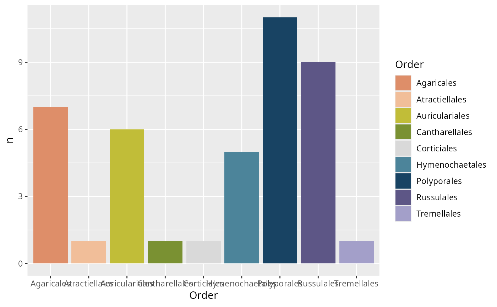

Reads the palette a phyloseq object carries and turns it into a discrete scale, whatever function produced the plot – inside ggplotpq or outside it. No plotting function needs to know that palettes exist.
Usage
scale_fill_tax_pq(
physeq,
rank,
suffix = "_color",
identity = FALSE,
drop = FALSE,
limits = force,
na.value = "grey70",
...
)
scale_color_tax_pq(
physeq,
rank,
suffix = "_color",
identity = FALSE,
drop = FALSE,
limits = force,
na.value = "grey70",
...
)
scale_fill_sam_pq(
physeq,
var,
suffix = "_color",
identity = FALSE,
drop = FALSE,
limits = force,
na.value = "grey70",
...
)
scale_color_sam_pq(
physeq,
var,
suffix = "_color",
identity = FALSE,
drop = FALSE,
limits = force,
na.value = "grey70",
...
)Arguments
- physeq
(phyloseq, required) An object carrying a colour column.
- rank
(character, required) A rank name from
phyloseq::rank_names(). For thetaxscales.- suffix
(character, default
"_color") Column-name suffix, as passed topalette_tax_pq()orpalette_sam_pq().- identity
(logical, default
FALSE) The plot maps the colour column itself rather than the level. See Details.- drop
(logical, default
FALSE) Keep unused factor levels in the legend, so figures showing different subsets share one legend.- limits
Passed to the underlying scale. The default
forcekeeps every level of the data, including those a subset does not use.- na.value
(character, default
"grey70") Colour for levels absent from the palette.- ...
Passed to the underlying ggplot2 scale.
- var
(character, required) A variable name from
phyloseq::sample_variables(). For thesamscales.
Which column is used
With the default suffix, the scale looks for <var>_color. If that column
is missing but the object carries exactly one other <var>_color_* column,
that one is used and a message says so; if several exist, the call fails and
lists them, because guessing would silently pick a palette. Passing suffix
explicitly always requires that exact column.
identity = TRUE
Normally the plot maps the level (aes(fill = Order)) and the scale
translates it into a colour. Some functions outside ggplotpq only let you
map an arbitrary column, in which case you map the colour column itself
(aes(fill = Order_color)) and the values are already hex strings. Set
identity = TRUE and the scale switches to
ggplot2::scale_fill_identity(), repairing the legend so it shows level
names rather than hex codes.
No stored palette
These functions never build a palette on the fly. Recomputing one per figure
is exactly the instability the anchoring exists to prevent, so an object
without a colour column raises an error naming the two correct fixes: store
the palette with add_to_phyloseq = TRUE, or add it to the plot directly
with p + palette_tax_pq(...).
Examples
# \donttest{
library(ggplot2)
data(data_fungi_mini, package = "MiscMetabar")
ps <- palette_tax_pq(
data_fungi_mini, "Order",
n = 8, add_to_phyloseq = TRUE
)
#> Using the colourblind-safe "Rattner" IdEst palette for 8 levels.
df <- as.data.frame(table(ps@tax_table@.Data[, "Order"]))
names(df) <- c("Order", "n")
ggplot(df, aes(Order, n, fill = Order)) +
geom_col() +
scale_fill_tax_pq(ps, "Order")

# }
if (FALSE) { # \dontrun{
# A plot built elsewhere that maps the colour column itself
df$Order_color <- ps@tax_table@.Data[
match(df$Order, ps@tax_table@.Data[, "Order"]), "Order_color"
]
ggplot(df, aes(Order, n, fill = Order_color)) +
geom_col() +
scale_fill_tax_pq(ps, "Order", identity = TRUE)
} # }